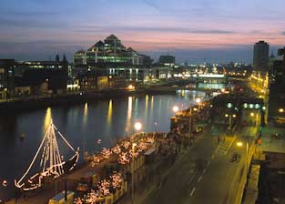

Home
Book now
-

Great Location
As one of the most conveniently located hotels in Dublin City Centre we are within a few minutes walking distance of many Dublin City Centre attractions, such as Temple Bar, O'Connell Street and the Dublin Convention Centre. For concert goers and sport fans The Ripley Court Hotel Dublin City is conveniently located near the O2 and only 15 minutes walking distance from Croke Park.
The city's light rail system (The Luas) is only a minute away which makes The Ripley Court Hotel the ideal base for exploring what the city has to offer.
-
Meeting Rooms
Because of its proximity to the International Financial Services Centre (IFSC), The Ripley Court Hotel is an ideal location for your conference or meeting.
Dublin’s new state of the art Conference Centre is just minutes away and we at The Ripley Court are happy to welcome you and your delegates who may need to regroup back at their hotel. The dedicated team in The Ripley Court Hotel will be on hand to ensure that your conference runs smoothly and professionally.
Whether you are planning a one day meeting or a week long exhibition, we are confident that it will be a complete success from start to finish. Just a call to our Reservations Department will set you on your way to a stress free event. There is also secure underground parking.
-

Shopping
It is just a minutes walk from the principal shopping streets and only 5 minutes from the ever popular Temple Bar area.
It is also within easy walking distance from Trinity College, Grafton Street, St Stephen's Green and The National Gallery. The nearest LUAS (tramline) stop is nearby off O' Connell Street which services both Intercity Rail Stations and The O2 events arena.
-
Excellent Amenities
All rooms are ensuite and equipped with tv and tea and coffee facilities. Other features include in-room safes, ironing facilities and complimentary wifi access. Rooms are serviced daily and fresh towels and toiletries are replaced.
The Ulysses bar provides an ideal atmospheric setting for a relaxing drink. An excellent spot to begin your night on the town!
Full Irish Breakfast is served daily in our Deli Bar. The buffet style breakfast is extensive offering a wide range of hot and cold options and is served from 7.00 am until 10.30am. Freshly made Sandwiches, Soup, pastries, coffees,and teas are available in our Deli Bar until 3.45pm
Our carvery lunch is available from Monday to Friday from 12.00 noon until 2.30 pm and serves delicious hot dishes prepared each morning with the finest Irish ingredients.